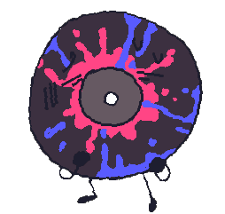

Long Play

- Alias
- LP
- Object
- Vinyl record
- Identity
- She/her, female
- Time in the Inbetween
- ~230 blooms
- Favorite food
- —
- Favorite drink
- —
- Hobbies
- Making music, watching Cas play games
- Favorite thing to do
- Play piano
- Favorite resident
- Cassette
Playlist
Long Play (LP) is pretty new to The House, compared to its long lifespan, but has her fair share of experience here. Having no mouth, she struggled with many aspects of life, even before coming here. However, after meeting Cassette—the only one who has ever been able to understand her without struggle—she finally feels confident enough in her communication skills. She likes to watch residents of the house hang out, perfectly content without joining due to being an introvert. To make up for not being able to speak, LP plays music to Cassette often, but sometimes to other residents of The House, too.